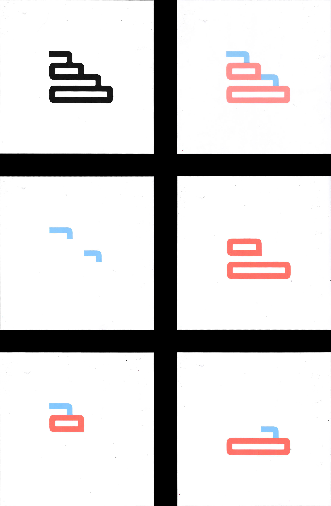
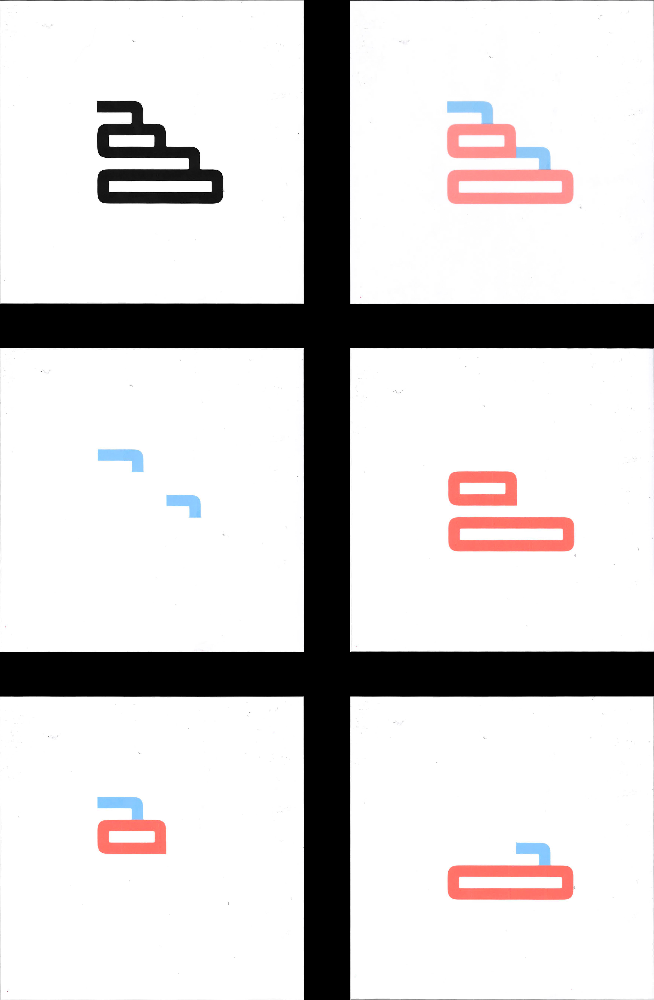
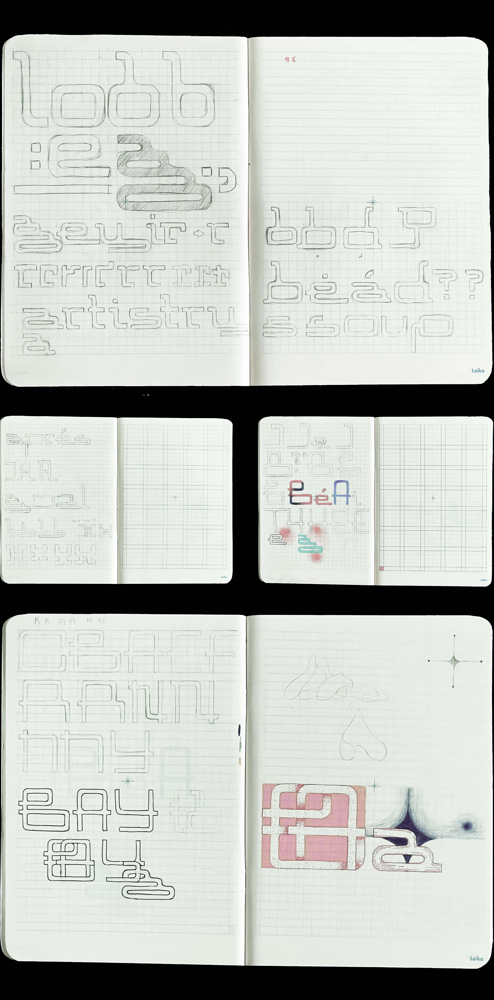
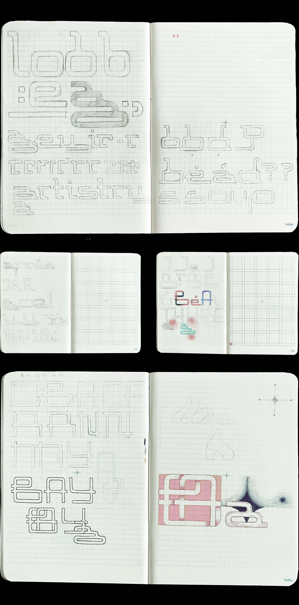
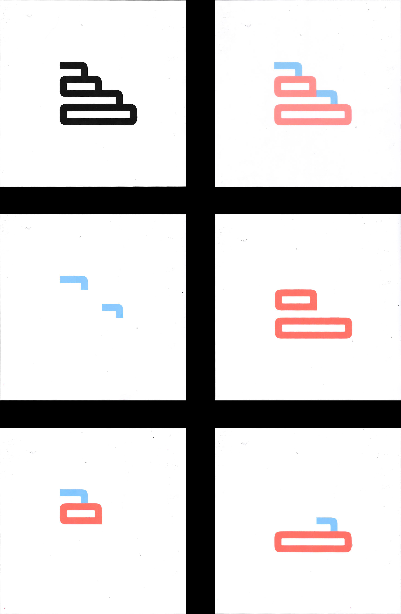
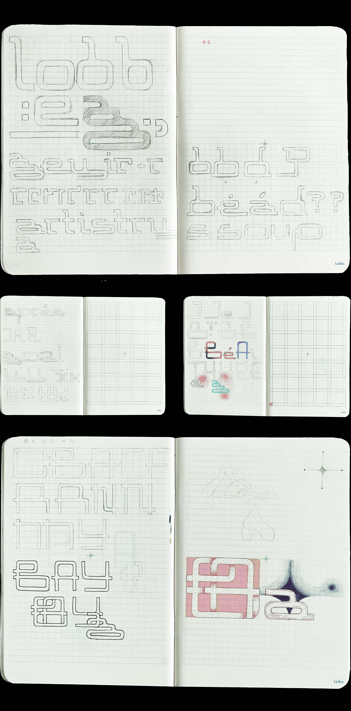

 

Artist and designer based in New York City working with graphic, print, and interaction design.
Submarine Typeface
This typeface, characterized by a repeated tail motif inspired by a submarine's periscope, is a geometric sans-serif. Structured on a grid system with uniform line thickness, the typeface was initiated with the unconventional design of the lowercase 'g.' The double story 'g' features the extended tail and loop periscope extensions, emulating two stacked submarines.
This typeface was designed for use in digital and printed media as a bold and experimental display font.


Typography